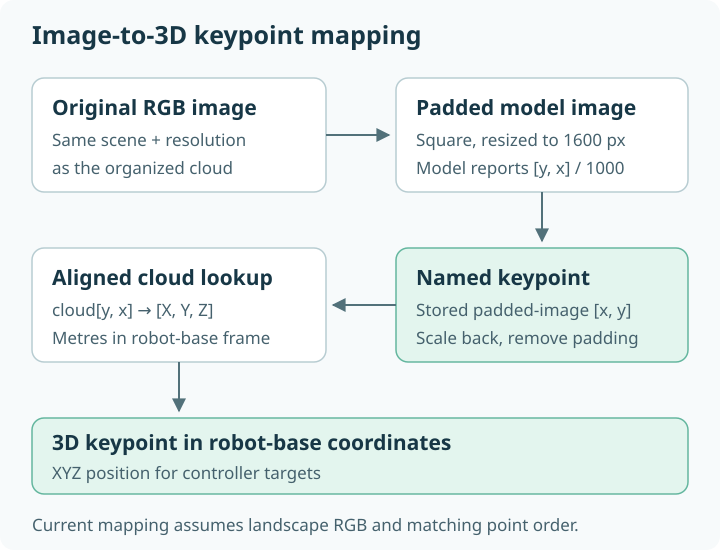
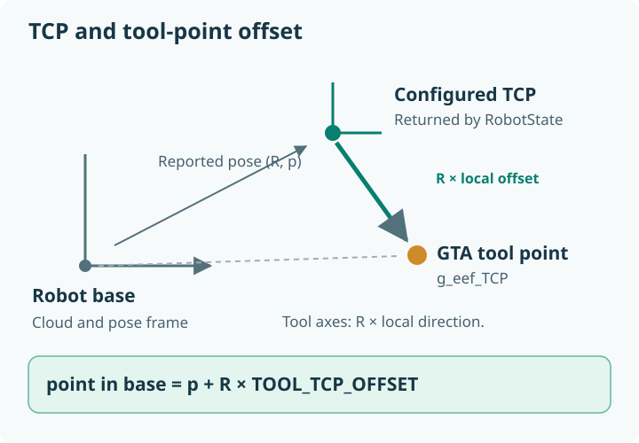

Keypoints and coordinate frames#
A keypoint is a named location used by a controller. A frame specifies the origin and directions in which its coordinates are expressed. Mixing frames or units can produce a plausible-looking but incorrect robot command.
Semantic names versus coordinates#
A visual keypoint such as g_Ocube_Ptop_Lcenter identifies the center of the
cube’s visible top face. The name is a semantic definition, not a 3D coordinate.
The Vision Module first supplies an image location; execution retrieves the
corresponding point from the cloud.
g_eef_TCP is different: it is an end-effector-local keypoint provided by
tool geometry, not visually detected.
Image coordinates#


The model reports normalized [y, x] coordinates. GTA stores [x, y]
pixels in the padded 1600 × 1600 image. At execution, the current mapping
rescales by original image width and removes vertical padding before indexing
the point cloud.
That mapping assumes the reference landscape image and organized cloud correspondence. Portrait images, different crops, missing points, or an unordered cloud are not generally supported by that formula. Inspect the camera integration requirements.
Robot-base coordinates and tool-local coordinates#
RobotState.get_tcp_pose() returns position in metres and a rotation vector
in radians, expressed in robot-base coordinates. The UR5e backend returns the
robot controller’s configured TCP pose; it does not substitute a flange pose.
For a robot-relative point, ObjectHandler computes:
point_in_base = R_pose @ point_in_tool + translation_pose
axis_in_base = R_pose @ axis_in_tool
The robot frame label in ObjectHandler means attached to the pose returned
by RobotState. Its world frame stores fixed base-coordinate values.


Named axes are not necessarily identity axes#
The generated world object currently uses these base-coordinate directions:
Name |
Direction |
|---|---|
|
|
|
|
|
|
Default tool axes are x=[0,-1,0], y=[-1,0,0], z=[0,0,1],
relative to the reported pose. Tool axes are named directions, not a validated
rotation matrix; GTA preserves their signs and magnitudes.
See TCP and calibration before changing them.